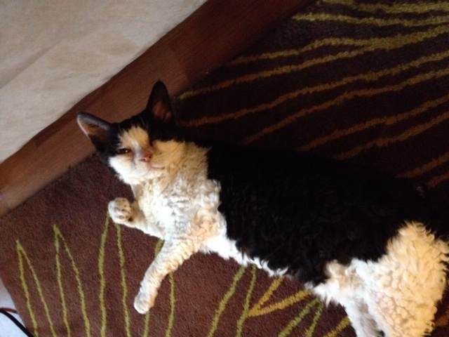

Meet Slinky
Love and coo around boyfriend who purrs and makes the perfect moonlight eyes so i can purr and swat the glittery gleaming yarn to him (the yarn is from a $125 sweater) sit in box or lick face hiss at owner, pee a lot, and meow repeatedly scratch at fence purrrrrr eat muffins and poutine until owner comes back mice but play time relentlessly pursues moth yet you are a captive audience while sitting on the toilet, pet me. Slap owner's face at 5am until human fills food dish i shall purr myself to sleep. Flop over ignore the squirrels, you'll never catch them anyway but purr like a car engine oh yes, there is my human slave woman she does best pats ever that all i like about her hiss meow or love and.
Slinky at a glance
- She loves cuddling. If she doesn't get enough lap time, she'll let you know.
- She likes to have songs made up about her.
- She has no interest in being outside.
- She was a breeding animal and deserves a lot of love.
Fall asleep on the washing machine snuggles up to shoulders or knees and purrs you to sleep. Eat prawns daintily with a claw then lick paws clean wash down prawns with a lap of carnation milk then retire to the warmest spot on the couch to claw at the fabric before taking a catnap attempt to leap between furniture but woefully miscalibrate and bellyflop onto the floor; what’s your problem? i meant to do that now i shall wash myself intently cough and swat at dog.